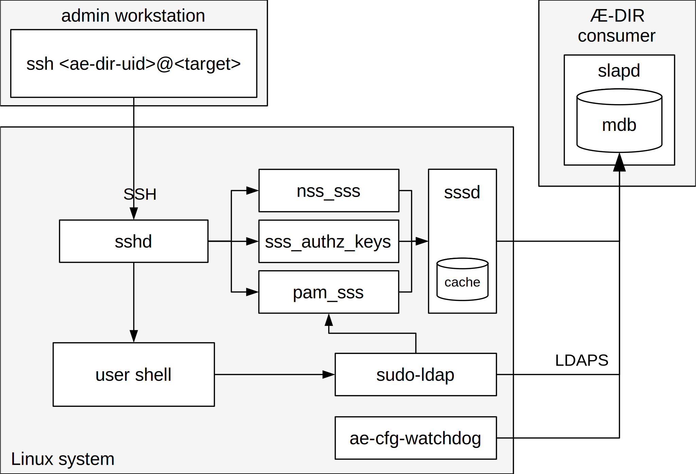
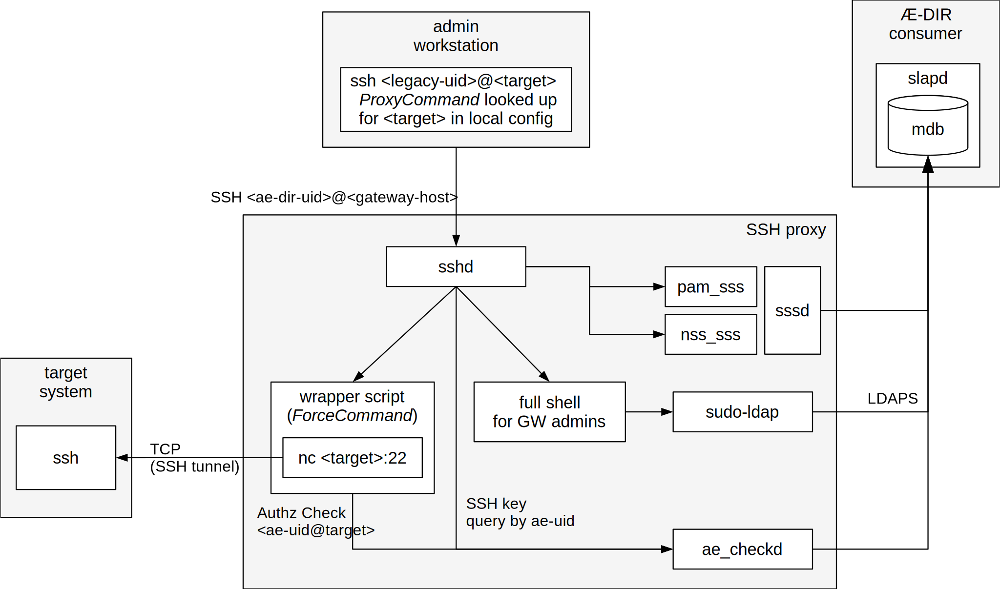

PAM/NSS services
Simple PAM/NSS clients
Smart PAM/NSS clients
Smart clients optimized for Æ-DIR should do the following:
-
Bind to Æ-DIR either with
- simple bind (short-DN form)
- SASL/EXTERNAL bind when using TLS client certs
-
Send LDAP Who Am I? extended operation
(see RFC 4352)
to find the real DN of their own
aeHost entry.
-
Search all relevant
aeSrvGroup
entries.
-
Construct the search filters for searching user, group and sudoers
entries based on the attributes found in aeSrvGroup entries
searched before:
- aeLoginGroups
- aeVisibleGroups
- aeVisibleSudoers
Linux with sssd
Example configuration files: client-examples/sssd/

SSH proxy
